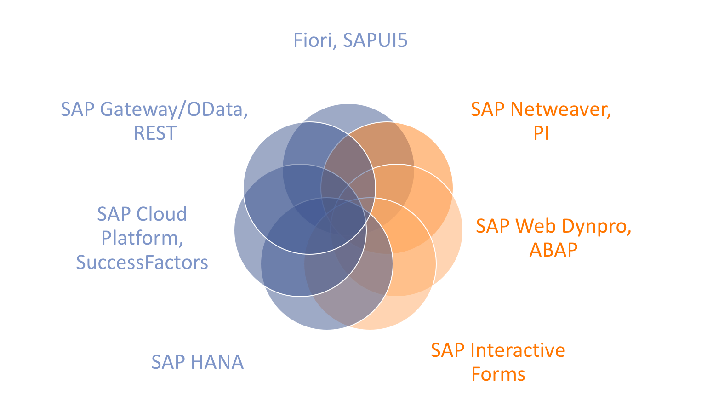
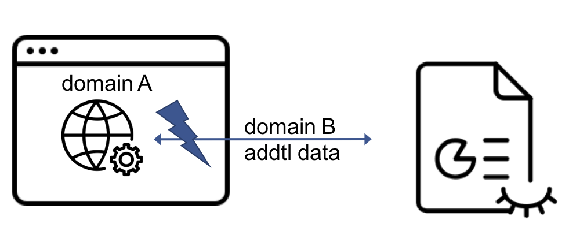
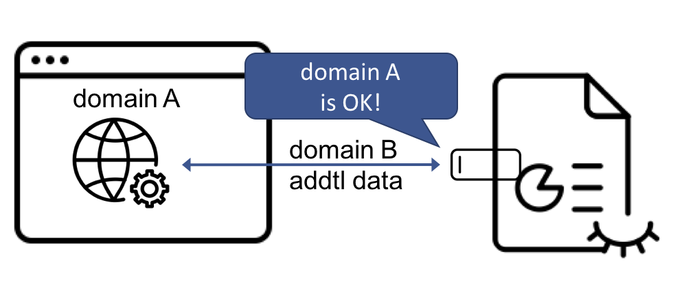

UI5con 2017 - Volker Buzek
j&s-soft GmbH
SAP-Consultancy with focus technology & innovation
var oCurrencyModel = new sap.ui.model.json.JSONModel();
oCurrencyModel.loadData(
"/some/API/endpoint",
null,
false
);
var sCurrency = oCurrencyModel.getData();$.ajax({
type: 'GET',
url: "/some/API/endpoint",
async: false
})

aCars.forEach(function (oCar) {
var oModel = new JSONModel();
oModel.loadData(
"/whatever/REST/endpoint",
null, // no addtl params
false // sync!
);
oCar.drive();
}var aRequestTimes = [], iCars = aCars.length;
aCars.forEach(function(oCar, iIndex) {
var oModel = new JSONModel();
oModel.attachRequestCompleted(function() {
aRequestTimes.push(
this.getData().delay
);
if (iIndex == (iCars - 1)) {
_asyncFinished();
}
});
oModel.loadData("/whatever/REST/endpoint");
});function _asyncFinished() {
var iTotalDelay = aRequestTimes.reduce(function(iTotal, iDelay) {
return iTotal + iDelay;
});
aRequestTimes.map(function(iDelay, iIndex) {
aCars[iIndex].drive();
);
}| 1 | 3 |
| 2 | 2 |
| 3 | 5 |
| 4 | 1 |
| 5 | 4 |
wrap the original callback-based function
var oModel = new JSONModel();
return new Promise(function(fnResolve, fnReject) {
oModel.attachRequestCompleted(function() {
fnResolve(this.getData()) //contains unique key
});
oModel.attachRequestFailed(function(oErr) {
fnReject(oErr);
});
oModel.loadData("/whatever/REST/endpoint");
})use wrapper in Promise.all()
return Promise.all(
aCars.map(function(oCar) {
var oModel = new JSONModel();
return _promisifiedLoad(oModel, oCar.getColor());
})
)
trigger Promise-chain with Promise.all()
_promiseAll()
.then(function(aResolvedCalls) {
aResolvedCalls.forEach(function(oResult) {
getCar(oResult.color).drive();
});
return true; // keep the chain going
})
.then(function() {
// do sth else and/or
// return a value to keep chain going
})
.catch(function(oErr) {
console.log(JSON.stringify(oErr));
})
Promise.race()
Promise.race(
aCars.map(function(oCar) {
var oModel = new JSONModel();
return _promisifiedLoad(oModel, oCar.getColor());
})
)
| Pro | Con | |
|---|---|---|
| Sync | sequential coding | blocking |
| Async | non-blocking | more dev effort, difficult sequence handling |
| Promises | non-blocking, sequence handling |
hard to debug |
test the chain definition
(typeof oPromise.then === "function"
&& typeof oPromise.catch === "function")defintion:
var oModel = new JSONModel();
return new Promise(function(fnResolve, fnReject) {
oModel.attachRequestCompleted(function() {
fnResolve(this.getData()) //contains unique key
});
oModel.attachRequestFailed(function(oErr) {
fnReject(oErr);
});
oModel.loadData("/whatever/REST/endpoint");
})
sinon.stub(oModel, "loadData", function () {
oModel.fireRequestCompleted()
})
// ...
oPromise()
.then(function() {
assert.ok(true, "reached the .then-state");
oModel.loadData.restore();
})
sinon.stub(oModel, "loadData", function () {
oModel.fireRequestFailed()
})
// ...
oPromise()
.catch(function() {
assert.ok(true, "reached the .catch-state");
oModel.loadData.restore();
})
assumption:
var oPromiseContainer = {
initPromiseChain: function() {
return oPromise;
}
}
var sMsg = "resolved Promise!";
sinon.stub(oPromiseContainer, "initPromiseChain")
.returns(Promise.resolve(sMsg));
// ...
oPromiseContainer.initPromiseChain()
.then(function(oResponse) {
assert.strictEqual(oResponse, sMsg, "Promise resolved correctly!");
oPromiseContainer.initPromiseChain.restore();
});
var oError = new Error("meeeh :(");
sinon.stub(oPromiseContainer, "initPromiseChain")
.returns(Promise.reject(oError));
// ...
oPromiseContainer.initPromiseChain()
.catch(function(oPromiseErr) {
assert.strictEqual(oError, oPromiseErr, "Promise rejected correctly!");
that.oPromiseContainer.initPromiseChain.restore();
});
Volker Buzek
j&s-soft GmbH
SAP Development Architect Mobility
W: www.js-soft.com
T: @vobu
E: volker.buzek@js-soft.com
M +49.151.649.622.50